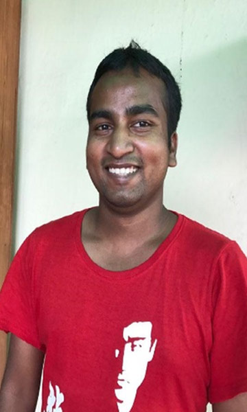

<section class="wrapper-section">
  <div class="container">
    <div class="success-row">
      <div class="success-img">
        
      </div>
      <h6 class="heading-badge">Jama Masjid to Admin Assistant at iPartner India</h6>
      <h2 class="stories-heading">Rajiv's Story at Jamghat</h2>
      <p>
        Rajiv arrived at Delhi from Ekchari, Bihar in 2002 with his mother and 2 sisters. His father opened his own paan
        shop in Jama Masjid area. Rajiv was helping his father at the shop and made friendship with other homeless boys
        in the area. He developed bad habits and got addicted to substance. His father had seen Jamghat staff and
        volunteers in the area conducting activities with children so he approached Jamghat. In 2009, he started going
        to Aangan Day Care Centre. At Aangan, he was involved in several activities and also got counselled to quit
        substance. He got basic education along with other street children. Soon he became very keen towards
        studies.<br><br>

        In 2011 he was moved to Aman - Jamghat’s shelter home for boys. He stayed there for 5 years and completed his
        High School and Intermediate from NIOS. He also was enrolled for vocational training an advance computer course
        from Deepalaya. Since 2015, he started working as Admin Assistant with iPartner India - one of the long- term
        funding partners of Jamghat. Rajiv started with a salary of INR 17,000 per month and it’s been 07 years now and
        Rajiv is one of the important employees of iPartner India. He lives independently in a rented house and is
        learning new skills every day. He is successful, confident and positive towards life.
      </p>

    </div>
  </div>
</section>